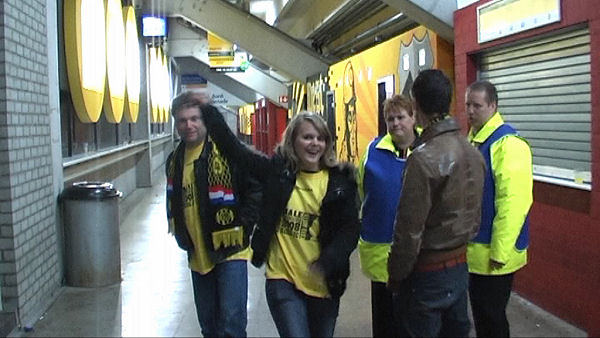

Het gastenvak kan al gauw een feestje vieren...
... als Holman door de verdediging slalomt: 0-1, (5').
In de 34e minuut wordt Kah gewisseld voor Senden.
Ruim twintig minuten later is het exit voor Senden. Nijhuis trekt de rode
kaart. Dit omdat Senden
Van Beukering onderuit zou hebben geschopt. In werkelijkheid dikt Van
Beukering een correcte tackle op
de bal enorm aan met een fopduik van formaat.
Toe maar...
Nog nooit werd Roda in één seizoen zo vaak benadeeld door de arbitrage.
Het publiek is woedend. Als de spreekkoren tegen Nijhuis blijven aanhouden
besluit deze de wedstrijd
stil te leggen voor een afkoelingsperiode.
Kuijer komt het publiek vragen kalmte te bewaren.
Na een vermeende overtreding van De Fauw juist buiten de zestien, beginnen
de spreekkoren weer.
De er op volgende vrije trap gaat hoog over.
Aftocht na weer een nederlaag. Roda speelde een baggerwedstrijd. Geen
bezieling, geen vernuft. Er is
een godswonder nodig om deze miskleun recht te zetten in de uitwedstrijd
komende zondag.
De eerste witte zakdoekjes zijn gesignaleerd...
De laatste Kickoff-ronde dit seizoen...?
De vrolijke bardames.
Waar blijven de spelers ???

Schande om zo vrolijk te zijn na een dergelijke wanvertoning...